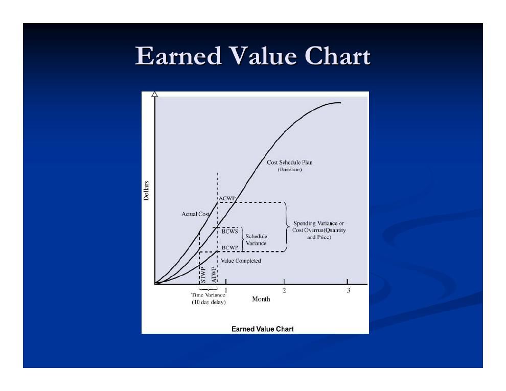
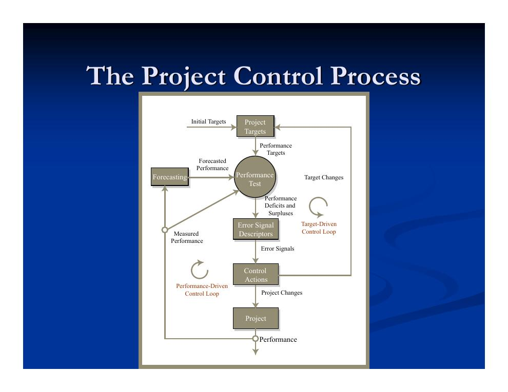
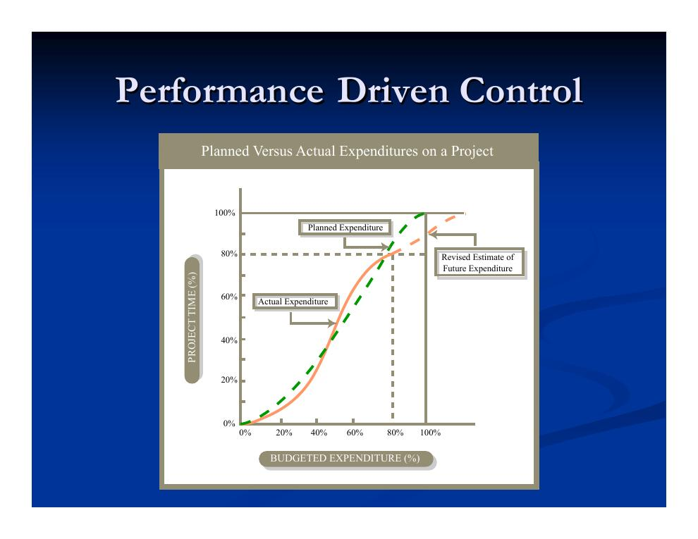
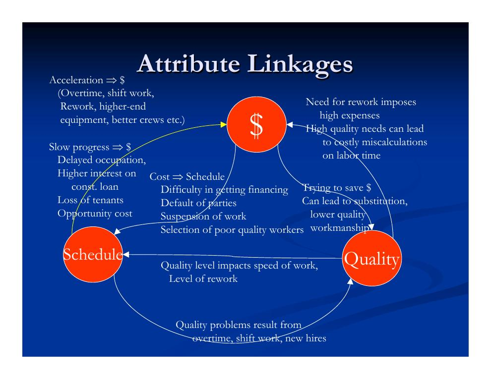
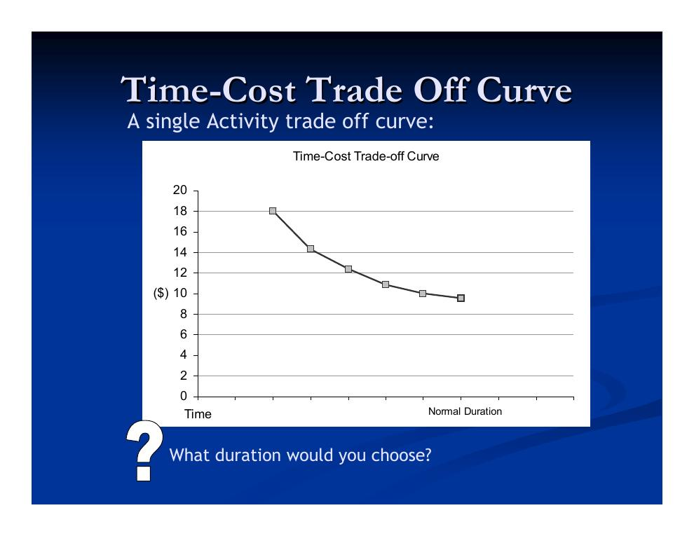
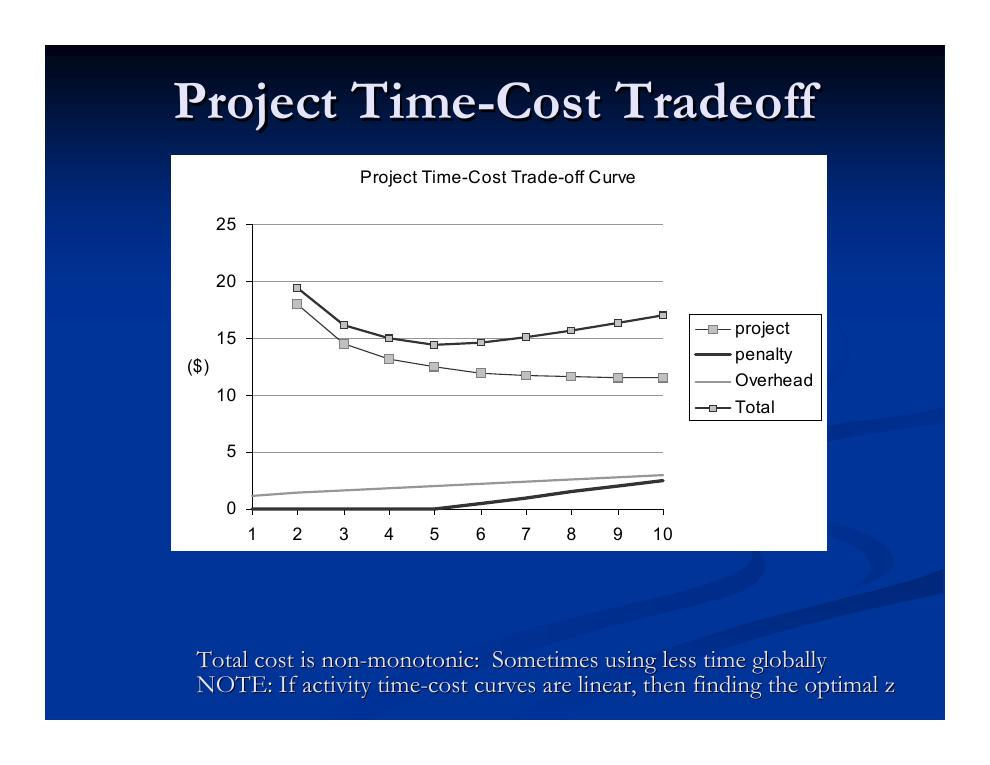

- Die Earned-Value-Kennzahlen im Überblick
- Das durchgängige Beispiel im Wochenverlauf
- Leistungsprognosen: Endtermin und Gesamtkosten
- Kostenfortschreibung: BAC, ETC und EAC
- Der Projektsteuerungsprozess als doppelter Regelkreis
- Leistungsorientierte Steuerung: Hebel und Nebenwirkungen
- Zeit-Kosten-Ausgleich und Projektbeschleunigung („Crashing“)
- Kostensteuerung, Slack Management und zielorientierte Steuerung
Die Earned-Value-Kennzahlen im Überblick
Die Earned-Value-Analyse (EVA, Fertigstellungswert-Analyse) – im US-Verteidigungsstandard auch Cost/Schedule Control Systems Criteria (C/SCSC) genannt – integriert Kosten, Termine und geleistete Arbeit, indem sie allen drei Größen Geldwerte zuordnet. Kapitel 5.1 hat die Grundgrößen eingeführt; hier werden sie vertieft, auf ein durchgängiges Beispiel angewendet und zur Prognose fortgeschrieben. Die folgende Tabelle fasst alle Kennzahlen zusammen – in der klassischen C/SCSC-Notation der Vorlesung und mit den heute gebräuchlichen Bezeichnungen:
| Kennzahl | Heutiger Name | Formel / Einheit | Bedeutung und Interpretation |
|---|---|---|---|
| BCWS – Budgeted Cost of Work Scheduled | PV (Planned Value, Planwert) | $ | Wert der Arbeit, die im betrachteten Zeitraum planmäßig zu leisten war. |
| BCWP – Budgeted Cost of Work Performed | EV (Earned Value, Fertigstellungswert) | $ | Zu Budgetpreisen bewerteter Geldwert der im Kontrollzeitraum tatsächlich geleisteten Arbeit. |
| ACWP – Actual Cost of Work Performed | AC (Actual Cost, Istkosten) | $ | Kosten, die für die geleistete Arbeit tatsächlich angefallen sind. |
| STWP / ATWP – Scheduled/Actual Time of Work Performed | – | Zeit | Plandauer bzw. tatsächlich aufgewendete Zeit für die geleistete Arbeit. |
| CV – Cost Variance (Kostenabweichung) | CV | CV = BCWP − ACWP | „Gebe ich für die geleistete Arbeit mehr oder weniger aus als geplant?“ + = Budgetunterschreitung, − = Überschreitung, 0 = im Budget. |
| CI – Cost Index | CPI (Cost Performance Index) | CI = BCWP / ACWP | > 1 Unterschreitung, < 1 Überschreitung, = 1 im Budget. |
| SV – Schedule Variance (Terminabweichung) | SV | SV = BCWP − BCWS | „Wie verhält sich der Wert der geleisteten zur geplanten Arbeit?“ + = voraus, − = im Rückstand, 0 = im Plan. Gemessen in $ als Näherung für den Wert. |
| SI – Schedule Index | SPI (Schedule Performance Index) | SI = BCWP / BCWS | > 1 voraus, < 1 im Rückstand, = 1 im Plan. |
| TV / TI – Time Variance / Time Index | – | TV = STWP − ATWP; TI = STWP / ATWP | Zeitabweichung in Zeiteinheiten; kann klein sein, obwohl der Mittelverbrauch stark abweicht. |
| RV / RI – Resource Flow Variance / Index | – | RV = BCWS − ACWP; RI = BCWS / ACWP | Geplante vs. tatsächliche Ausgaben des Zeitraums – unabhängig von der geleisteten Arbeit; sagt allein nichts über „gut“ oder „schlecht“. |
| BAC – Budget at Completion | BAC | Σ BCWS über WBS bzw. OBS | Gesamtbudget des Projekts bei Fertigstellung. |
| ETC – Estimate to Complete | ETC | z. B. ETC = (BAC − BCWP) / CI | Prognostizierte Kosten der noch ausstehenden Restarbeit. |
| EAC – Estimate at Completion | EAC | EAC = BAC − CV bzw. EAC = BAC / CI | Prognostizierte Gesamtkosten bei Fertigstellung (siehe Abschnitt 4). |
Zur Interpretation: Die Terminabweichung SV wird in Geld gemessen – selbst ein zeitlich kleiner Rückstand kann groß ausfallen, wenn gerade an einer teuren Projektkomponente gearbeitet wird. Alle drei Grundgrößen lassen sich in einem Diagramm über der Zeit auftragen – der klassischen EVA-Kurve:

Das durchgängige Beispiel im Wochenverlauf
Die Vorlesung greift das Beispiel aus Kapitel 5.1 wieder auf: ein Projekt mit den Vorgängen A bis G, von denen nach vier Wochen A (Budget 1.500 $, 5 Wochen), B (3.000 $, 3 Wochen) und E (5.700 $, 7 Wochen) angelaufen sind. A und B sind abgeschlossen, E ist erst zu 2/7 ≈ 28,6 % fertig. Neu ist hier die Betrachtung als Zeitreihe: Erfasst man BCWS, BCWP und ACWP wochenweise je Vorgang, wird sichtbar, wie sich die Lage entwickelt:
| Vorgang | Woche 1 ($) | Woche 2 ($) | Woche 3 ($) | Woche 4 ($) | ||||||||
|---|---|---|---|---|---|---|---|---|---|---|---|---|
| BCWS | BCWP | ACWP | BCWS | BCWP | ACWP | BCWS | BCWP | ACWP | BCWS | BCWP | ACWP | |
| A | 300 | 500 | 500 | 300 | 500 | 500 | 300 | 300 | 300 | 300 | 200 | 200 |
| B | 1.000 | 1.000 | 1.000 | 1.000 | 1.000 | 1.000 | 1.000 | 500 | 500 | 0 | 500 | 500 |
| E | 814 | 300 | 814 | 814 | 400 | 686 | 814 | 500 | 1.000 | 814 | 428 | 400 |
| Summe | 2.114 | 1.800 | 2.314 | 2.114 | 1.900 | 2.186 | 2.114 | 1.300 | 1.800 | 1.114 | 1.128 | 1.100 |
Daraus ergeben sich die wöchentlichen Indizes SI = 0,85 / 0,88 / 0,79 / 0,82 und CI = 0,78 / 0,82 / 0,79 / 0,83 – das Projekt liegt durchgehend hinter Plan und über Budget. Kumuliert über den ganzen Monat:
Leistungsprognosen: Endtermin und Gesamtkosten
Die Leistungsprognose (Forecasting) ist ein zentraler Baustein der Leistungsanalyse: Sie erlaubt es, künftige Abweichungen zu erkennen und den Steuerungsprozess zu entwerfen, bevor die Probleme tatsächlich eintreten. Prognosen schätzen die Verhältnisse zu einem späteren Zeitpunkt oder am Projektende und werden typischerweise regelmäßig über die gesamte Laufzeit wiederholt.
Für den Endtermin wird die Restarbeit mit der erwarteten Arbeitsrate hochgerechnet:
Für die Gesamtkosten wird analog die Restarbeit mit den erwarteten Einheitskosten bewertet:
Kostenfortschreibung: BAC, ETC und EAC
Für die laufende Fortschreibung der Kostenprognose werden vier Größen unterschieden:
- Budget at Completion (BAC)
- Das Gesamtbudget bei Fertigstellung – die Summe der BCWS-Werte über die unteren Ebenen des Projektstrukturplans (WBS) bzw. der Organisationsstruktur (OBS).
- Work Remaining (WR)
- Die Restarbeit, bewertet zu Budgetpreisen: WR = BAC − BCWP.
- Estimate to Complete (ETC)
- Die aktualisierte Kostenschätzung für die verbleibende Restarbeit.
- Estimate at Completion (EAC)
- Die prognostizierten Gesamtkosten bei Fertigstellung: EAC = ACWP + ETC.
Für das EAC gibt es zwei klassische Ansätze, die sich in der Behandlung der Restarbeit unterscheiden:
- Ansatz „ursprüngliche Schätzung“ (Original Estimate): Die Restarbeit wird weiterhin zu Budgetpreisen bewertet – die bisherige Abweichung bleibt als einmaliger „Ausrutscher“ stehen: ETC = BAC − BCWP.
- Ansatz „revidierte Schätzung“ (Revised Estimate): Die bisherige Kosteneffizienz wird auf die Restarbeit fortgeschrieben – wer bisher zu teuer war, bleibt es voraussichtlich: ETC = (BAC − BCWP) / CI.
Im Beispiel (BAC = 31.000 $, CV = −1.272 $, CI = 0,83) liegen die beiden Prognosen deutlich auseinander:
| Ansatz | Rechnung | EAC |
|---|---|---|
| Ursprüngliche Schätzung | EAC = BAC − CV = 31.000 − (−1.272) | 32.272 $ |
| Revidierte Schätzung | EAC = BAC / CI = 31.000 / 0,83 | 37.349 $ |
Der Projektsteuerungsprozess als doppelter Regelkreis
Die Überwachung meldet, dass es ein Problem gibt – die Steuerung muss es beheben. Ihre Schlüsselelemente sind die Problemdiagnose (Thema von Kapitel 5.3) und anschließend entweder die Plankorrektur (oft ein politischer Prozess) oder die Problemkorrektur (oft technisch-organisatorisch). Alles muss zügig geschehen: Es ist zu prüfen, ob die Maßnahmen das Problem tatsächlich beheben, und entsprechend nachzusteuern. Steuerung ohne schnelle Überwachung ist stark eingeschränkt.

Flexibilität ist dabei die wichtigste Verteidigung gegen Risiken: Eine zu straffe Planung kann die Steuerung erheblich erschweren. Was für den Bauherrn gilt (Erweiterbarkeit durch stützenfreie Spannweiten, Leerrohre usw.), gilt auch für die Bauausführung – man braucht genug „Spiel“, um Pläne bei Bedarf zu ändern. Der übliche Zielkonflikt: Wer zu stark auf Kosten optimiert (etwa bei Geräten, Material oder Personal), verliert Flexibilität. Vorsicht auch bei Value Engineering, das Flexibilität einschränkt.
Leistungsorientierte Steuerung: Hebel und Nebenwirkungen
Eine unbequeme Tatsache der leistungsorientierten Steuerung: Man kann typischerweise nur ein Merkmal eines Problems auf einmal korrigieren – Zeit, Kosten oder Qualität. Man muss die Wechselwirkungen verstehen und priorisieren (Triage). Die meisten „leichten Gewinne“ sind ohnehin bereits ausgeschöpft; eine Ausnahme besteht, wenn neue Informationen verfügbar werden, die jetzt bessere Leistung ermöglichen.

Die drei Zielgrößen sind eng verkoppelt – Eingriffe an einer Stelle wirken auf die anderen zurück:

Zur Terminsteuerung können Projektleiter die Arbeitsrate im Wesentlichen auf zwei Wegen erhöhen: durch zusätzliche Ressourcen (z. B. Schedule Crashing, siehe Abschnitt 7) oder durch Umverteilung vorhandener Ressourcen (z. B. Linear Scheduling Method). Daneben lassen sich die Randbedingungen ändern: der Ort der Arbeit, die Reihenfolge, Abfolge oder der Zeitpunkt der Arbeiten, die eingesetzte Technologie sowie Werkzeuge und Verfahren.
Alle Beschleunigungsmaßnahmen haben jedoch typische Nebenwirkungen:
| Beschleunigungsmaßnahme | Typische Nebenwirkungen und Grenzen |
|---|---|
| Mehrschichtbetrieb | Koordinationsprobleme, Personalbeschaffung, Umwelt- und Arbeitsschutzauflagen |
| Überstunden / verlängerte Arbeitstage | Ermüdung, sinkende Arbeitsmoral, Nacharbeit |
| Größeres oder leistungsfähigeres Gerät | Einarbeitung/Lernkurve, Beschaffungszeit, Platzmangel |
| Mehr Arbeitskräfte | Einarbeitung (bindet die erfahrensten Kräfte!), Platzmangel, Einstellungsdauer, fehlende Prozesskenntnis |
| Schneller einbaubare Materialien | Beschaffung |
| Alternative Bauverfahren | Qualifikationsprofil, Lernkurve, unbekannte Nebenwirkungen |
| Abruf eines Bereitschafts-Nachunternehmers | Lernkurve, Reibung zwischen Teams, unbekannte Persönlichkeiten |
Zeit-Kosten-Ausgleich und Projektbeschleunigung („Crashing“)
Häufig besteht ein Zielkonflikt zwischen Geld und Zeit – „Zeit ist Geld“: Schnellere Fertigstellung gelingt mit höher qualifizierten Arbeitskräften, teurerem Gerät, mehr Personal oder besser bezahlten (motivierten!) Kräften. Für jeden einzelnen Vorgang lässt sich dieser Zusammenhang als Zeit-Kosten-Kurve darstellen:

Der Zeit-Kosten-Ausgleich hat zwei Komponenten (einzeln oder kombiniert): (1) Dauerverkürzung bei Vorgängen auf dem kritischen Weg – mit möglichst geringem Kostenanstieg; (2) Kostensenkung bei Vorgängen abseits des kritischen Wegs – oft durch Verlängerung, die den Vorgang aber nicht kritisch werden lassen darf. Wichtig: Explizite Vorgangs-Zeit-Kosten-Kurven erfassen nur die direkten, lokalen Vorgangskosten und ignorieren die (wichtigen) indirekten Kosten der Projektverlängerung – globale Kosten, die von der Gesamtdauer abhängen.
- Activity Crashing (Vorgangsbeschleunigung)
- Der gezielte Einsatz von Geld zur Dauerverkürzung. Der kritische Weg benennt die zeitbestimmenden Vorgänge: Es bringt nichts, alle Vorgänge zu beschleunigen – nur die kritischen. Das ist ein wichtiger Beitrag der Critical Path Method (CPM) zum Bauverständnis; zuvor beschleunigten viele Bauleiter pauschal das ganze Projekt. Achtung: Der kritische Weg kann sich durch das Crashing selbst verschieben.
Die Heuristik von Kelley und Walker systematisiert das Vorgehen:
- CPM-Netzplan mit Normaldauern berechnen.
- Für alle kritischen Vorgänge die Grenzkosten des Crashing bestimmen (Mehrkosten je eingesparter Zeiteinheit).
- Den kritischen Vorgang mit den geringsten Grenzkosten um einen Zeitschritt verkürzen.
- Resultierende Projektdauer und -kosten festhalten.
- Schritt 3 wiederholen, bis ein weiterer Weg kritisch wird.
- Ab Schritt 1 wiederholen, bis die Projektkosten steigen.
Die Heuristik liefert gute, aber nicht notwendigerweise optimale Lösungen. Probleme: Waren die ursprünglichen Dauern teilweise durch Ressourcenrestriktionen bestimmt, ist der resultierende Terminplan womöglich nicht mehr zulässig oder hat einen stark unregelmäßigen (und damit teuren) Ressourceneinsatz; bei feineren Kostenabstufungen vervielfacht sich die Zahl der Knoten; monoton fallende, aber nicht konvexe Kurven erfordern andere Algorithmen. Sind alle Zeit-Kosten-Kurven linear, lässt sich die optimale Projektdauer als lineares Programm (LP) bestimmen, andernfalls als nichtlineares Programm (NLP). Übliche Annahmen: konvexer Zeit-Kosten-Verlauf, keine bindenden Ressourcenrestriktionen, Normaldauer als kostengünstigster Punkt.

Kostensteuerung, Slack Management und zielorientierte Steuerung
Auch bei der Kostensteuerung stehen Ressourceneinsatz und -zuteilung im Mittelpunkt. Wirksame und rechtzeitige Kostensteuerung ist ein fortlaufender Prozess mit folgenden Ansatzpunkten:
- Ressourcen anpassen, um Überkapazitäten abzubauen
- Randbedingungen ändern, um Arbeitseffizienz und Produktqualität zu erhöhen
- Verfahren ändern, etwa durch Fremdvergabe einzelner Arbeiten (Outsourcing)
- Arbeit, Geräte oder Material neu bepreisen
- Durch günstigere, aber akzeptable Materialien oder Geräte substituieren
- Slack Management (Puffermanagement) – Zeit gegen Geld tauschen
- Ist das Budget in einem Zeitraum begrenzt, wird das Projekt durch Verschieben von Vorgängen („Timing“) und der zugehörigen Aus- und Einzahlungen umgeplant – Zeit verursacht allerdings zusätzliche indirekte Kosten! Reihenfolge der Verschiebung: zuerst Vorgänge mit freiem Puffer (FF), dann solche mit Gesamtpuffer (TF), zuletzt kritische Vorgänge.
- Ressourcenglättung (Resource Leveling)
- Zur Erinnerung aus Kapitel 4.4: Gleichmäßigerer Ressourceneinsatz senkt die Ressourcenkosten – bei Personal die Kosten für Einstellung, Entlassung und Einarbeitung, bei Material Lagerbedarf sowie Planungs- und Steuerungsaufwand. Ressourcenglättung verteilt die Puffer (TF oder FF) unkritischer Vorgänge so um, dass die Schwankungen im Ressourcenbedarfsprofil minimiert werden.
Greifen die leistungsorientierten Maßnahmen nicht oder sind die Ziele nicht mehr realistisch, bleibt die zielorientierte Steuerung (Target-Driven Control, vgl. Abb. 2): die Anpassung der Projektziele selbst. Sie ist weniger ein technischer als ein politischer Prozess – Budgets, Termine und Leistungsumfang müssen mit Bauherr und Beteiligten neu verhandelt werden.